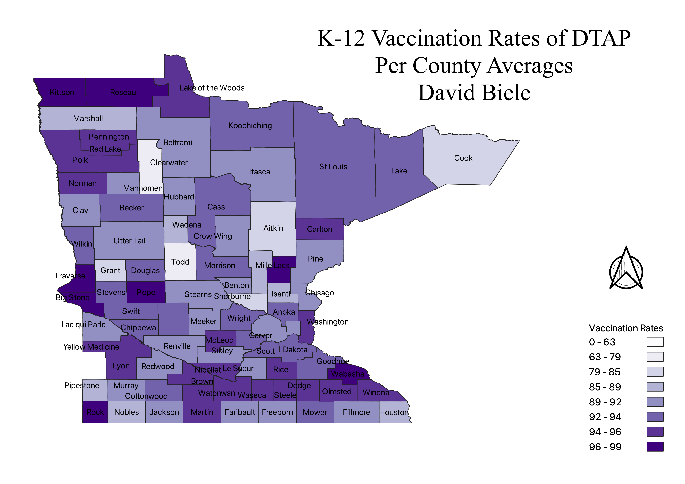

Homework 9: Minnesota Choropleth
David Biele
This is a choropleth of Median Income by County in Minnesota. The Projection is 4269, which is favored for the Continental US.
The Data was Obtainded from Minnesota Department of Health.
Vaccination Rates vary by county. There appears to be no correalation of Urban or Rural Counties or the population density of counties. This topic was selected due to the availability of data as well as comparison to other maps completed about Minnesota

Data used for this project
Clean CSV dataset
Link to geoJSON
Original CSV obtained from: https://www.health.state.mn.us/people/immunize/stats/school/index.html